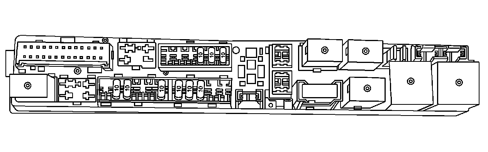
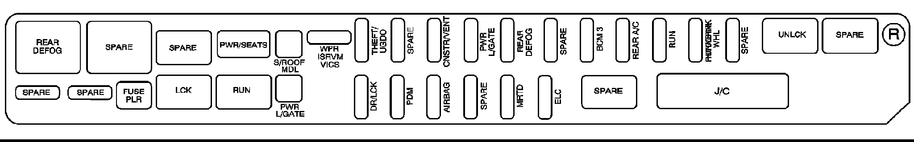

Right Side
REAR UNDERSEAT FUSE BLOCK - RIGHT SIDE
The right side rear fuse block is located under the rear seat on the right side of the vehicle. The carpet must be lifted up to access the rear fuse block.

To access the fuse block, push in the two tabs located at each end of the fuse block cover. Then lift the cover off.

RELAYS - USAGE
REAR DEFOG Rear Window Defogger
SPARE Spare
SPARE Spare
UNLCK Rear Door Locks
SPARE Spare
LCK Rear Door Locks
RUN RLY Rear Air Conditioning Blower Motor, Climate Control Ignition, Heated Steering Wheel
SPARE Spare
MINI FUSES - USAGE
WPR ISRVM VICS Rear Wiper Switch, Inside Rearview Mirror
THEFT UGDO Garage Door Opener
SPARE Spare
CNSTR/VENT Canister Vent Solenoid
PWER L/GATE Power Liftgate Module
REAR DEFOG Rear Window Defogger
SPARE Spare
BCM 3 Hush Panel Lamps, Overhead Courtesy Lamp Assembly, Right Side Front Turn Lamp
REAR A/C Rear Air Conditioning System
RUN Climate Control Module
HDD/STR/WHL Heated Steering Wheel
SPARE Spare
SPARE Spare
SPARE Spare
DR/LCK Rear Door Locks
PDM Passenger Door Module (Locks, Outside Mirror, Window Switches)
AIRBAG Sensing Diagnostic Module (SDM), Occupant Sensor, Roll-over Sensor
SPARE Spare
MRTD Suspension Module
ELC Electronic Leveling Compressor (ELC) Exhaust Solenoid, ELC Relay
J CASE FUSES - USAGE
S/ROOF/MDL Power Sunroof Module
PWR LIFT GATE Power Liftgate Motors
CIRCUIT BREAKERS - USAGE
PWR/SEATS Power Seat Motors
MISC. - USAGE
FUSE PLR Fuse Puller
J/C - Joint Connector